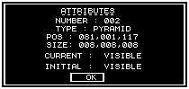
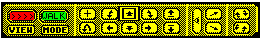

There are various parts of the environment creation which will require input from you to set the parameters relating to the current function. These parameters will usually be set within a DIALOGUE BOX. (See figure 2).
The setting of parameters is achieved either by selection or by typing values (with the exception of entering/editing MESSAGES, which allow for alphanumeric characters).

To enter or edit a numerical parameter, you must highlight the value then select it. The value will be cleared and a cursor appears, allowing you to enter a numeric value. To end editing of a particular text item, simply press the RETURN or ENTER key whereupon the cursor will be removed and any restrictions on numerical values will be applied i.e. if you were to type in the number 900 for the activate range and as the maximum value is 255 it will automatically be restricted to 255 on pressing RETURN. Note that while editing a parameter it is impossible to exit the DIALOGUE BOX or edit any other items until you have finished editing the current parameter by pressing RETURN or ENTER.
The Condition editing screen will appear after selecting a condition from a list for editing. Upon entering the condition editor, if the condition is empty, you will see a blank screen with a bar, of half the screen width, at the top. The word END is written on the left hand side. This word is in fact an FCL (Freescape Command Language) instruction. This instruction will always appear at the end of the command list (But you place more END instructions anywhere in a list to end the processing of a command list prematurely).
The bar serves to highlight the line selected for editing, or the line at which new instruction lines will be inserted.
Pressing a letter key starts the command entry. A cursor appears at the bottom of the screen, allowing you to edit what is being typed. The editor will only allow you to type up to eight characters before the cursor jumps ahead to new position in the line. This is because Freescape instructions are no longer than eight characters in length. The position that the cursor jumps to signifies the start of a parameter field. Pressing SPACE will also take you to the next field if the command has less than 8 characters. An FCL instruction can have from zero to three parameter fields (depending on the instruction). Each parameter field consists of a number between 0 and 255. Pressing the space bar moves the cursor to the next field. Only Alphabetic characters may be typed in the first field (instruction field), and only Numeric characters in the three fields following (parameter fields).
Pressing Return (Enter) will place the line into the instruction list at the line highlighted by the bar. However, if there is an error in the typing or format of the line, then it will not be placed in the instruction. The screen will flash red and the cursor will appear in the field where the error occured.
To correct errors, use the left and right cursor keys to move the cursor along the line. The delete (shift + 0 Spectrum 48K) key will move the cursor left one character deleting the character it moved onto. It is also possible to type over characters that already exist on the line.
When not editing a line:
(Spectrum users note: all references to shift means the use of the Caps Shift key)
Note: if the instruction list reaches the bottom of the screen it continues in another column on the right hand side of the screen. The maximum number of lines that can be edited is two columns worth.
The movement icons in the centre of the screen can be used to move up, down, forwards, backwards, left or right. The turn icons allow you to turn or tilt your head to look in a different direction. Select the eye level icon to look forwards if you get confused.

The U-turn icon is used to turn around 180 degrees so that you can look directly behind you. The cross hair icon turns the movement cross in the centre of the view window on or off.
Selecting the MODE icon changes your current mode of movement. The possible modes are:
The VIEW icon is useful for looking at the whole of the current area. Normally this icon shows arrows pointing to the Mode icon which means that the View mode is not operational. Selecting the View icon cycles between NORTH, SOUTH, EAST, WEST or PLAN which shows you the whole area from that direction. (PLAN shows you the area from directly above).
If you find using the FREESCAPE movement icons confusing, then you can also use the keys listed in the back of this manual to do most of the useful things.
Note that the EDIT and FREESCAPE icons remain on the screen and can be used at most times during editing.
After loading you will be able to see some more icons below the movement icons. These allow you to change your 3D world. These icons are marked GLOBAL, COPY, CREATE, EDIT, LOAD, RESET, SHADE, DELETE, ATTRIBUTES and SAVE. A description of what each of these icons consist of will be found later in the manual (see section on SHORTCUT ICONS).